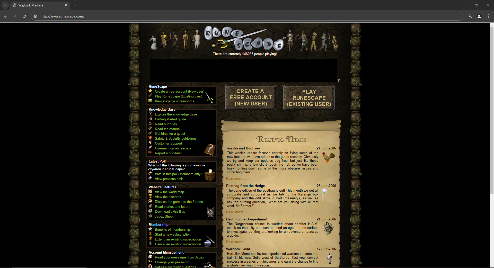
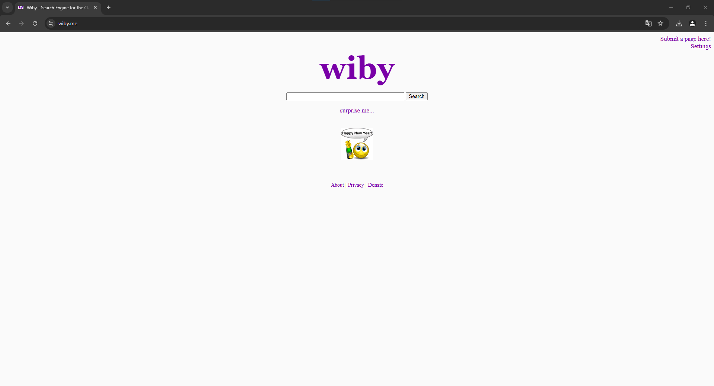
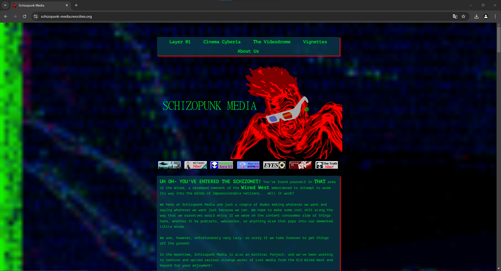
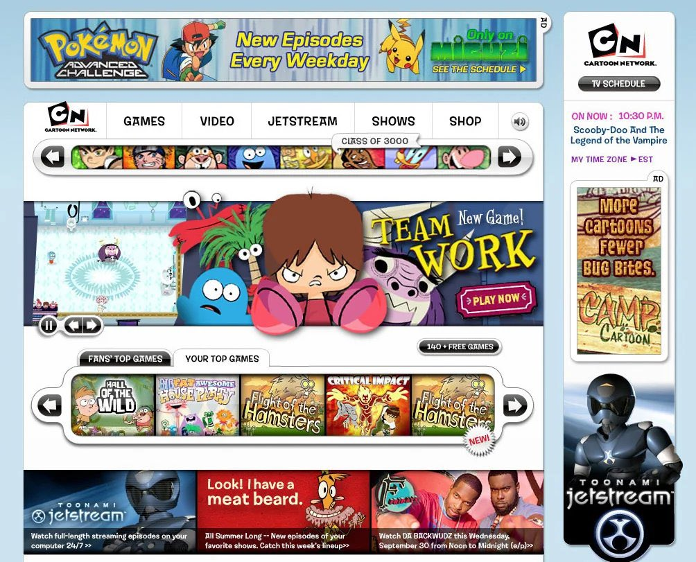

Vampiros reais

Site que eu achei sem querer uns anos atras e tem uma energia bem daquela época, um blog de uma garota adolescente que afirma ter contato com vampiros. sua postagem mais antiga foi de 2009 e a última de 2013, me pergunto como essa pessoa está hoje em dia

Runescape
Provavelmente o primeiro jogo online que joguei, era criança e burro demais na época pra entender o jogo mas me divertia demais tentando aprender a jogar e rodando pelo mapa, hoje em dia o jogo está muito diferente, porém linkei o site da versão oldschool do jogo que é baseada na versão de 2007
Wilby
O wilby é um buscador um pouco diferente dos normais, ele te resultados de sites antigos ou sites recentes porém mais simples e parecidos com os antigos, vale a pena testar
Schizopunk Media
Um site completamente aleatório que achei no neocities mas achei muito massa, eles tem um podcast que também é bem legalzinho, vale apena conferir se vc entende inglês. Inclusive esse site foi uma das minhas inspirações pra fazer esse site
Cartoon Network
Um dos mais clássicos pra mim, provavelmente um dos primeiros sites que acessei, passava horas jogando antes de ter meu primeiro video game, boa parte dos jogos eram incriveis, hoje em dia obviamente o site está completamente diferente, mas acho uma pena eles nao darem acesso aos jogos antigos